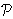
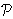
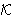

[Prethodna tema]
[Sljedeća tema]
4.2. ElGamalov
kriptosustav
Ideja javnog ključa se sastoji u tome da se konstruiraju
kriptosustavi kod kojih bi iz poznavanja funkcije za šifriranje eK
bilo praktički nemoguće (u nekom razumnom vremenu) izračunati funkciju za dešifriranje dK.
Tada bi funkcija eK mogla biti javna.
Sada svaki član (nazovimo ga osoba B) neke grupe korisnika koja želi
međusobno komunicirati ima dva ključa: Be
(javni ključ za šifriranje) i
Bd (tajni ključ za dešifriranje).
To znači da svatko može poslati poruku osobi B koristeći
javni ključ Be, ali samo osoba B može
pročitati poruku, jer samo ona zna tajni ključ
Bd, a nitko iz poznavanja
Be ne može izračunati
Bd.
U provedbi ove ideje ključnu ulogu igraju tzv. osobne jednosmjerne
funkcije. Za funkciju f kažemo da je jednosmjerna
(one-way) ako je f lako, a f -1 teško
izračunati. Ako je pritom f -1 lako izračunati
ukoliko nam je poznat neki dodatni podatak (trapdoor - skriveni ulaz),
onda f nazivamo osobna jednosmjerna funkcija.
U konstrukciji osobnih jednosmjernih funkcija
koriste se teški matematički problemi, kao što su
- faktorizacija velikih brojeva (RSA, Rabin);
- problem diskretnog logaritma (ElGamal, Menezes-Vanstone);
- problem ruksaka (Merkle-Hellman, Chor-Rivest);
- dekodiranje linearnih kodova (McEliece).
Sada ćemo opisati
ElGamalov kriptosustav koji je 1985. godine
predložio Taher ElGamal,
a zasnovan na teškoći računanja diskretnog logaritma u
u grupi ( *,
.).
Najbolji poznati algoritam za problem diskretnog logaritma u
*
je jedna varijanta "index calculus metode" koja se naziva
sito polja brojeva. Očekivani broj operacija za računanje
diskretnog logaritma tom metodom je
*,
.).
Najbolji poznati algoritam za problem diskretnog logaritma u
*
je jedna varijanta "index calculus metode" koja se naziva
sito polja brojeva. Očekivani broj operacija za računanje
diskretnog logaritma tom metodom je
exp(1.92 (ln p)1/3 (ln ln p)2/3).
Algoritmi ovakve složenosti nazivaju se subeksponencijalni
algoritmi. Pokazuje se da je po složenosti ovaj
problem vrlo sličan problemu faktorizacije, a i metode koje koriste
u najboljim poznatim algoritmima za rješavanje tih problema su
vrlo slične. No, kako ćemo nešto kasnije vidjeti,
problem diskretnog logaritma u
*
znatno je lakši od problema diskretnog logaritma u grupi
eliptičke krivulje nad konačnim poljem.
ElGamalov kriptosustav:
Neka je p prost broj i

 *
primitivni korijen modulo p.
Neka je prostor otvorenih tekstova
 =
*,
prostor šifrata
*
primitivni korijen modulo p.
Neka je prostor otvorenih tekstova
 =
*,
prostor šifrata
 =
* ×
* i
prostor ključeva =
* ×
* i
prostor ključeva
 =
{ (p, ,
a, ) :
 a
(mod p) }.
a
(mod p) }.
Vrijednosti p, ,
i
su javne, a vrijednost a je tajna.
Za K = (p, ,
a, )
i tajni slučajni
broj k
p -1
definiramo
eK(x, k) = (k
mod p,
x
k
mod p).
Za y1, y2
*
definiramo
dK(y1, y2) = y2(y1a)-1 mod p.
|
Mogli bismo reći da se otvoreni tekst x "zamaskira" množeći s
k.
Onaj tko poznaje tajni eksponent a može iz
k
izračunati k
i "ukloniti masku".
Da bi eksponent a stvarno bio tajan, prost broj p mora biti dovoljno velik da bi u
*
problem diskretnog logaritma bio praktički nerješiv. Stoga se danas
preporuča korištenje prostih brojeva od oko 1024 bita. Također bi,
zbog razloga koje ćemo kasnije objasniti, red grupe, tj. broj
p - 1, trebao imati barem jedan veliki prosti faktor
(od barem 160 bitova).
Primjer: Neka je u ElGamalovom kriptosustavu
p = 2579,
= 2,
a = 765. Tada je
=
2765 mod 2579 = 949.
Pretpostavimo sada da Alice želi Bobu poslati poruku
x = 1299. Neka je njezin tajno izabrani broj
(jednokratni ključ) k = 853. Tada Alice računa
y1 = 2853 mod 2579 = 435,
y2 = 1299
 949853 mod 2579 =
1299 2424 =
2396,
949853 mod 2579 =
1299 2424 =
2396,
te pošalje Bobu šifrat (435, 2396).
Bob nakon što primi šifrat (435, 2396) računa
x = 2396
(435765)-1 mod 2579 =
2396 2424-1
= 2396 1980 =
1299,
što predstavlja originalni otvoreni tekst.
Napomenimo da se operacija potenciranja modulo p može
efikasno provesti "metodom uzastopnog kvadriranja", tj. tako da se
eksponent prikaže u bazi 2.
Inverz modulo p se također može efikasno izračunati i
to primjenom Euklidovog algoritma, pomoću kojeg za broj n koji
je relativno prost s p nalazimo brojeve u i v
za koje vrijedi nu + pv = 1.
Zadatci:
- Neka je u ElGamalovom kriptosustavu
p = 1777,
= 6,
a = 1009. Šifrirajte otvoreni tekst x = 1483,
uz pretpostavku da je jednokratni ključ k = 701.
- Dešifrirajte šifrat (1664, 1031) dobiven ElGamalovim
kriptosustavom s istim parametrima kao u 1. zadatku.
[Prethodna tema]
[Sljedeća tema]